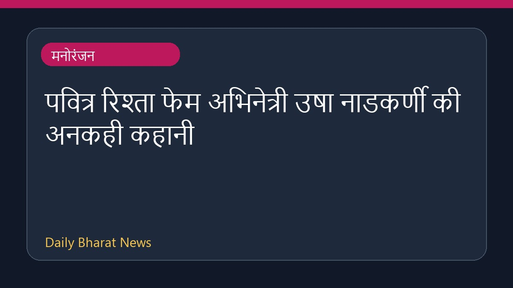

रणबीर कपूर और यश स्टारर 'रामायण' के अंग्रेजी ट्रेलर से प्रशंसक प्रभावित

फिल्म 'रामायण' के अंग्रेजी ट्रेलर को दर्शकों की अच्छी प्रतिक्रिया मिली है। इस फिल्म में रणबीर कपूर और यश मुख्य भूमिकाओं में नजर आएंगे। ट्रेलर में एआई लिप-सिंक तकनीक के इस्तेमाल की काफी चर्चा हो रही है। इसके साथ ही, रणबीर कपूर की आवाज को भी काफी सटीक बताया गया है। यह फैंटेसी एक्शन फिल्म बॉक्स ऑफिस पर 'गॉडजिला माइनस ज़ीरो' के साथ टक्कर के लिए तैयार है और दोनों फिल्में छह नवंबर को आईमैक्स स्क्रीन के लिए आपस में मुकाबला करेंगी।
मूल स्रोत: Entertainment Sources
'Ramayana' English trailer impresses fans; Ai lip-sync technology in Ranbir Kapoor and Yash starrer haile - timesofindia.indiatimes.com ↗
'Ramayana' English trailer impresses fans; Ai lip-sync technology in Ranbir Kapoor and Yash starrer haile - timesofindia.indiatimes.com ↗
संबंधित खबरें
 मनोरंजन
मनोरंजनमिनी माथुर ने जीती एलायंस की ट्रॉफी, मिला 50 लाख रुपये का नकद पुरस्कार
 मनोरंजन
मनोरंजनक्या वरुण Tej अपनी फिल्म 'Korean Kanakaraju' से करेंगे 100 करोड़ क्लब में एंट्री?
 मनोरंजन
मनोरंजनअमीषा पटेल ने प्रीति जिंटा के 'बटवारा 1947' लुक पर दी प्रतिक्रिया

मनोरंजन